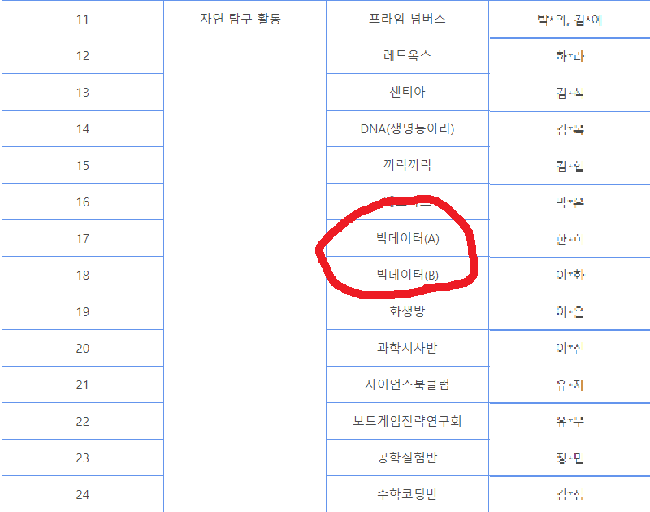
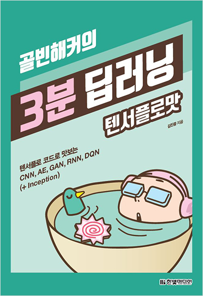
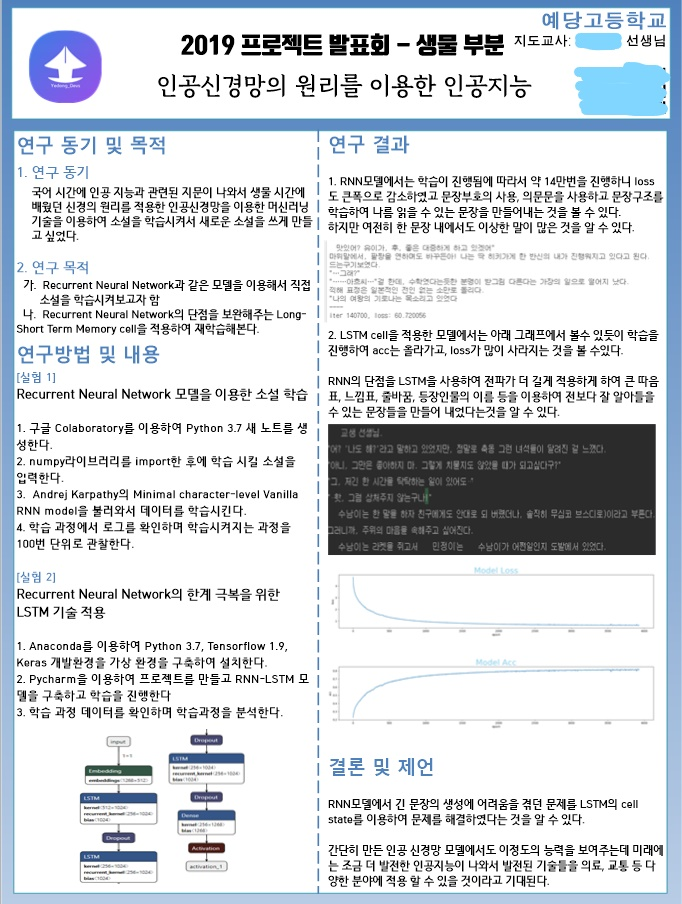
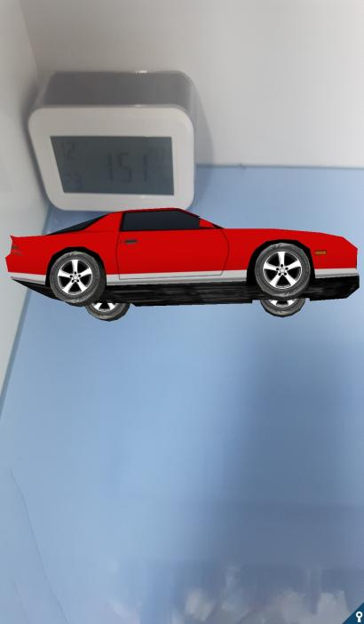
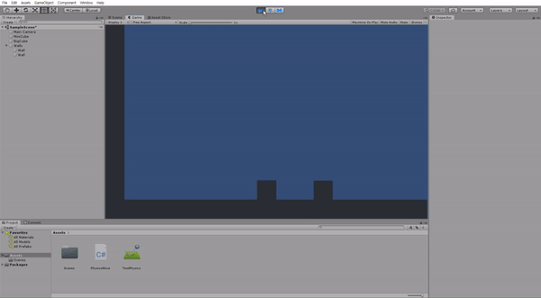
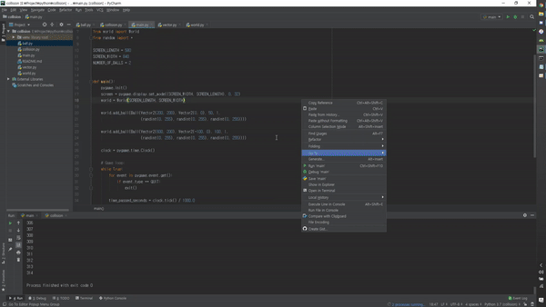
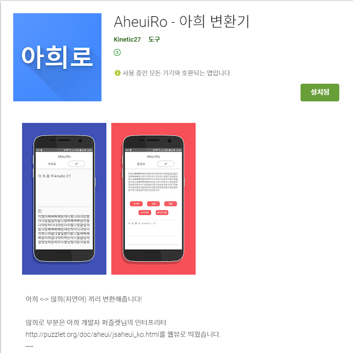
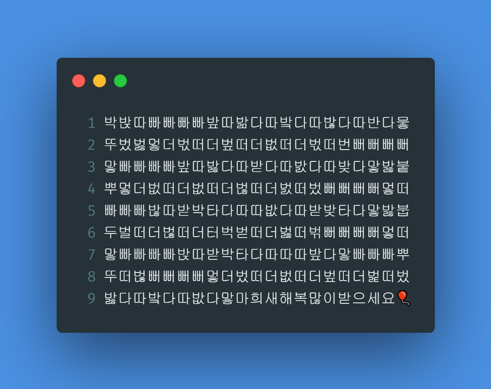

2020년, 회고와 새해 다짐
한게 정말로 없지만 뭐라도 써보자
2019년에 뭐 했더라
1. 학교생활
2019년이 한건 없는데 막 지나갔습니다
공부한답시고 프로그래밍을 반정도 놓으려고도 했었는데 안하고는 못 버틸것 같아서 가끔씩 깨작거렸습니다.
공부도 놓쳤고 프로그래밍도 딱히…
그래도 빅데이터 동아리 회장, 아두이노 자율동아리, 학술제 같은 학교 활동들을 주기적으로 했고
학교의 모든 발표에 꾸역꾸역 프로그래밍을 넣어서 뭔가 조금씩 잊지 않으려고 한 2019년이었던 것 같습니다.

어쩌다보니 동아리 규모도 꽤 커져서 약 40명을 수용하게 되었네요.
2. 인공지능
사실 저는 인공지능의 매우 일부분, 기초중 기초만을 알고있습니다.
인공지능에 처음 관심을 갖게된 것은 하이톤(고등학생 해커톤)에서 옆팀에 계시던 분께서 머신러닝과 음성인식 기술을 활용하여 멋진 응급상황 대처 앱을 제작하신게 굉장히 인상깊고 힙해서 바로 도서관으로 달려가서 책을 알아봤습니다.
다행히 저희 동네는 4차산업특화(?)같은 신도시라서 그런지 동네 도서관에 IT서적이 몰려있는 특화 코너가 있어서 어렵지 않게 찾아볼 수 있었습니다.
그중 제일 눈에 띈 책이 골빈해커의 3분딥러닝 - 김진중(골빈해커)였습니다!

우선 다른 책에 비해서 책의 크기가 조금 작고, 센스있는 제목과 표지가 있어서 읽기 편했습니다.
대략적인 작동방식, 대표적인 모델등을 이런 책과 구글링을 통해서 습득했습니다.
지금 생각하면 멍청한 질문을 골빈해커님께 DM으로 보냈었던 기억이나네요
그 후 환경을 구축해가며 아까 위에서 서술했던 빅데이터 동아리에서 간단한 예제를 돌려보려고 수업 자료로 쓰려고텐서플로우 & 파이썬 환경 구축하기를 작성했습니다.
그러다가 결국 학교 학술제 발표에서 Keras로 LSTM으로 시를 짜주는 인공지능을 만들어보게되었습니다!
Char-RNN-LSTM-using-Keras관련된 글은 나중에 작성해보겠습니다!
나름 만들고 뿌듯했지만 발표시간이 작아서 아쉬웠던것 같습니다.

3. 안드로이드 앱
사실 이게 메인이었습니다.
초등학교때 야매로 프로그래밍이 뭔지도, 변수가 뭔지도 모르고 제대로된 문서 없이 네이버 카페에 의존하다가 Kotlin을 배우면서 문서를 읽으면서 제대로 배우기 시작한 것 같습니다.
Native Android를 어느정도, 초보를 갓 벗어난 수준으로 다룰 수 있게 되었지만, 여러가지 학교 활동에 치어서 별로 만든건 크게 없었고 현재 참여하고 있던 프로젝트인 FoodViewer에 사용될 라이브러리와 샘플 프로젝트를 만들어뒀습니다.
정확히는 구글 min3D가 현재 안드로이드 프로젝트 구조와는 완전 동떨어져있고, 제대로된 샘플도 없었기에 나중에 클라이언트 단에서 .obj 파일을 불러와서 여러가지에 활용하기 위해서 모듈 라이브러리화를 시키고, TextureView 와 엮어서 뭔가 AR처럼 띄워보기도 했습니다.

4. 파이썬
이번년도에 제일 많이 만진게 뭐냐! 라고 누가 묻는다면 저는 망설임 없이 “파이썬을 했다!” 라고 답할 것 같습니다.
가장 기억에 남는 일은 물리 발표인데요
그래서 블럭들이 충돌하는 횟수가 왜 원주율에 가까워질까요?
이 영상을 보고나서 당장 미리 설치해둔 Unity를 키고 같은 상황을 만들어서 실험을 해봤습니다.

하지만 1kg, 10000kg 부터는 문제가 발생하였습니다.
유니티 엔진의 고질적인 문제 때문인것 같습니다.
그래서 PyGame을 이용하여
Python3-2D-Elastic-Collision를 만들어 본 결과 성공을 했고 이것으로 발표를 했습니다

이것 뿐만이 아니라 학교에서 매주 화요일마다 파이썬 수업을 받아서 틈틈히 코드를 짰었고, 빅데이터 동아리에서도 갓갓 외부 강사님을 모셔와서 파이썬으로 수업을 진행해서 진짜 파이썬을 제일 많이 사용했네요!
5. 아희
아희 는 제가 제일 애착이 많이 가는 언어중 하나입니다!
어느 날 카톡방에서 어떤분이 아희라는 언어가 있다고 같이 공부해보지 않겠냐고 해서 같이 공부하다가, 한글을 이렇게 놀랍도록 활용하여 사용할 수 있구나하고 빠져들게 되었습니다

이 앱 프로젝트는 사실 핸드폰에서 아희를 편하게 돌려보려고 만들었는데 생각보다 저만편하게 쓰고있었습니다.
나중에는 인터프리터도 직접 Kotlin으로 짜는것이 목표입니다.
만들게되면 Kotlin/Aheui로 배포할 것 같네요
예전에 오픈 채팅방에서 제 앱을 통해서 아희코드를 생성해서 쓰고 계신분을 보고 너무 뿌듯해서 그 때부터 아희를 전파(?)하고 다니게 된 것 같습니다.

이 코드도 AheuiRo로 제작하였으니 관심있는 분들은 다운 받아보시는걸 추천해드립니다.
아희를 전혀 몰라도 3초면 제작할 수 있어요!
6. 그 외의 나머지 것들
이번년도에는 Node.js를 이용해서 매우 간단한 백엔드를 짤 수 있게 되었고, 프론트엔드는 HTML 으로 매우 조금 간단한 페이지를 짤 정도로 잠깐 배웠던 것 같아요.
마크업 언어라고는 Android Xml 만 다루다가 HTML 을 배워보니 어렵더라고요.
생각보다 정리해보니 매우 다양한 경험, 활동을 한 것 같기도 합니다.
2020년 계획과 목표
1. 학교 생활에 충실하기
이건 어떻게 보면 2019년에 제일 못 지킨 것 같습니다…
이번엔 꼭 반성하고 열심히 공부해야 대학가죠
근데 아마 2020년에도……
2. 프로그래밍 관련 글 포스트하기
지금까지는 안해봤던 새로운 목표인데요!
사실상 프로그래밍을 붙잡고 하기는 시간상 힘들 것 같고, 블로그도 만든김에 가끔 글을 써보려고 합니다.
3. 잠좀 제시간에 자고 운동 가끔하기
네.. 중학교때부터 집돌이로 살아서 운동은 거의 해본적이 없습니다
그러다보니 체력적인 면도 조금 부족한 것 같고 특히 잠을 너무 자유분방하게(?)자다보니까 체력이 팍팍 닳은 것 같아요..
그러니까 제발 이번년도에는 잠 제때 자기!!
어찌되었던지 결국 2020이고 2021 수능이 다가오네요!
모두 새해 복 많이 받으시고 커밋 열심히 하시길!!